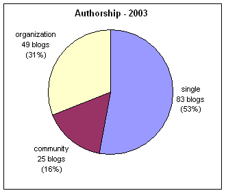
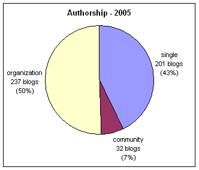

Vol. 12 No. 4, October 2007
|
Vol. 12 No. 4, October 2007
| ||||
Blogs or Weblogs (in this paper we will use the generally accepted term: blog) were little known six years ago; Rebecca Blood (2000) states that at the beginning of 1999 there were only twenty-three known blogs. The page of only Weblogs (Garrett 2002), a supposedly exhaustive list of blogs, listed about 300 as of October, 2000. A survey by Perseus (Henning 2003) estimated the number of blogs at 4.12 million and the number of active blogs (having new entries in the last two months) at 1.4 million; their forecast was for about ten million blogs by the end of 2004. In mid February 2005, Technorati, a tool for monitoring blogs, watched 7,012,022 blogs. Thus the growth in the number of blogs on the Web is clearly exponential.
'Weblogs are pages consisting of several posts or chunks of information per page, usually arranged in reverse chronology' (Bausch, Haughey & Hourihan 2002: 7). Weil (2003) provides twenty definitions of a blog, where each describes a different aspect and the list of definitions as a whole provide a humorous description of what blogs are about. A comprehensive discussion of blogging and the specific terminology is provided by Wikipedia (2005). Some blogs contain links to Web sites or to other blogs and their main purpose is to discuss the contents of the linked sites or simply to inform about the existence of the sites/products. Such blogs are usually topic oriented and disseminate information without personal involvement. However, often the blog is a mixture of what is happening in a person's life and what is happening on the Web
(MarketingTerms n.d.), and there are also blogs that emphasize the personal side only: such blogs are online versions of traditional diaries. Thus, there is a continuum of blog types ranging from purely topic-oriented to purely personal.
Currently there are a number of blogging tools that enable users to create their online diaries with ease (for a review see Rubenking 2003). These tools, often free, offer you instant communication power by letting you post your thoughts to the Web whenever the urge strikes
(Blogger 2004). Besides enabling posting time-stamped messages and providing permalinks (permanent links to the posted messages), a simple archiving mechanism. As messages accumulate they are moved from the front page to the archive, but they continue to be accessible through the permalinks. Blogging tools usually have mechanisms that allow the readers of the postings to comment on messages, a feature that can be disabled. On the sidebars of the opening page of a blog, the blog owner may place additional information and links, e.g., some personal information (sometimes as a link), a short introduction to the blog, a list of blogs the author considers interesting (called a blogroll), lists of noteworthy sites other than blogs, or a link to RSS feeds, where RSS is a means to automatically distribute headlines, links and short summaries of blogposts (also called syndication). RSS stands for Rich Site Summary or Really Simple Syndication.
What is the relevance of blogs to librarians and to information professionals? The ASIST Professional Guidelines (1992) state that information professionals should seek to extend public awareness and appreciation of information availability
. The mission statement in the ALA's (American Library Association) policy manual (2005, adopted in 1986) declares that librarians are recognized as proactive professionals responsible for ensuring the free flow of information and ideas to present and future generations of library users
. As such, librarians and information professional should not only provide information on demand and act as intermediaries between the users and the information, but should alert to the existence of novel, relevant information and provide access and facilitate the effective use of resources, technologies and information retrieval tools by users and fellow professionals. An additional responsibility of the information professional is to uphold each user's, provider's, or employer's right to privacy and confidentiality and to respect whatever proprietary rights belong to them
(ASIST Professional Guidelines 1992). With the increased complexity of the application of the principles of fair use, copyright, privacy and intellectual property in the electronic world, the information professional must be constantly aware of the developments in these areas. Blogs are ideal for disseminating all types of information chosen by the blogger, for commenting, expressing opinions and for discussing implications. They can also be utilized to provide local information (e.g., changes in opening hours, special lectures and new acquisitions). The findings of this paper show that librarians and information professionals utilize blogs for these purposes.
The potential of blogs for information dissemination has been clearly demonstrated in the last paragraph, but they can only achieve real impact if they attract a significant readership. According to Cyberatlas (Greenspan, 2003), in 2003 only 2% of the online community set up blogs and only 4% of the community read blogs. Data from the PEW Internet and American Life Project (Rainie, 2005) show that the number of bloggers and blog readers is increasing at least in the United States: 7% of the American Internet users have created blogs and 27% said that they read blogs. There is no specific information on the readership of librarian blogs.
In this paper an attempt was made to collect a relatively exhaustive list of English language blogs created by libraries, librarians or information professionals. These blogs were characterized from multiple aspects, in order to examine whether they or a subset of them can serve as information dissemination tools.
Blogs with an emphasis on library and information science blogs were discussed in a book, several papers and presentations (e.g., Crawford 2001, Fichter 2001, 2003a, 2003b; Clyde 2002a, 2002b, 2003, 2004a, 2004b; Cohen 2003, Sauers, 2006). Clyde (2003, 2004b) studied the use of blogs by libraries and analysed several features of them. She claimed that there is a discrepancy between the potential of the blogs for libraries and their actual use and was disappointed by the small number of libraries currently utilizing blogs. Data for Clyde's analyses were collected in July 2004. Crawford (2005, 2006) also analysed librarian blogs both in 2005 and 2006. Data for this paper were collected in February 2005. As a point of reference, the results based on data from February 2005 are compared with the results of a previous paper (Bar-Ilan 2004) for data that was collected in December 2003 using similar methods and sources. This comparison provides an insight to the changes that occurred to library and librarian blogs over a period of fourteen months.
The first step in this study was to create a list of English-language blogs maintained by librarians, information professionals and libraries. Only blogs that provided information for librarians and information professionals and/or disseminated non-personal information to the general public were included. Often the blog postings contained personal information as well, but blogs where all the postings were personal were excluded. Personal blogs are widespread on the Web and among librarians, but their uses were not examined in this study.
Data were collected on two occasions, in December 2003 and in February 2005 which enabled the analysis of changes in the blogging patterns of librarians over time. Except for two or three entries that were only discovered during the content analysis of the blogs, the list for the first data collection point was compiled on 5 December, 2003. The list for the second data collection point was compiled on 15 February, 2005; the blogs were checked for existence and activity between February 15 and 19, 2005. Only active blogs were analysed, where active is defined following Henning (2003) as blogs that were updated at least once during the two months period prior to the date of inspection.
In order to create as exhaustive as possible a list of blog, a large number of sources was consulted and different retrieval techniques were used. Each source and techniques has its limitations and to try to overcome some of these limitations multiple sources and techniques were applied. The use of multiple methods considerably improves data collection, thus a very detailed description of the data collection process is provided here. The directories and lists consulted for creating the list are listed below in chronological order for both the first and the second rounds, December 2003 and February 2005 respectively (for pages no longer active, the link points to the archived page at the Internet Archive:
Thus, an effort was made to create an exhaustive list of English language library and information science blogs. Of course, the process is limited by the quality of the sources we located, but the large degree of overlap between the lists and the fact that a number of lists have not produced additional blogs may indicate that the lists are quite comprehensive. A wide range of techniques for locating library and information science blogs was applied: consulting well-known lists, using search engines to discover additional blogs and lists of blogs, scanning the blogrolls of the already located blogs and locating blogs that link to blogs already in the list. Crawford (2005) analysed librarian Weblogs, for his study he consulted: LISFeeds, the Open Directory and Libdex: all these sources were also examined for this study.
In the first round, 354 blogs were identified and were visited between December 21, 2003 and January 1, 2004. Only blogs that had entries in or after November 2003 were characterized (blogs not fulfilling this criterion were inactive for at least two months; the usual definition of inactive blogs). Some of the URLs were non-existent, while other blogs were inactive or the URLs did not lead to a blog. Altogether 157 blogs were analysed in the first round. In the second round 470 active blogs were located.
In the second data collection round all the blogs listed in the first round, but not present in the February 2005 list were revisited. Some of these blogs had moved to a different URL, some had turned into personal blogs with no library-related content, others had disappeared or had become inactive. Only one blog from the first list was absent from the second list and this blog was included for further analysis.
In the first round an extensive content analysis of the blogs and of all the postings in November 2003 (see for example, Krippendorff 2004 or (Neuendorf 2001) was carried out. For each blog the following information was recorded:
| Theme | Topics covered |
|---|---|
| Professional | |
| Librarian awareness (e.g., lost Internet references, publisher deals, relevant articles) | |
| Databases (e.g., Amazon, but also commercial databases), information services and bibliographies | |
| Information science & library science (e.g., knowledge management, information architecture, information seeking) | |
| LIS studies | |
| Semantic web, ontologies, data mining, metadata, xml | |
| Digital libraries, digital archives, digitization | |
| Open access | |
| Ejournals, ebooks, electronic publishing | |
| Traditional librarianship (cataloging, classification, OPACs, etc.) | |
| Scholarly communication (incl. citations) | |
| Preservation, book binding | |
| Library related issues not covered by a more specific category (e.g effect of blogging on libraries, librarian t-shirts, action figure, Dewey hotel) | |
| General | |
| Alerting to general information | |
| Blogging (incl. technological aspects, e.g., RSS) | |
| Internet searching and retrieval (including business issues, e.g., Google's IPO) | |
| Book announcements and reviews | |
| Intellectual property, copyright, DCMA, ethics, privacy, fair use, censorship | |
| Specific resources in area of expertise (e.g science resources for science libraries: sites, articles, not databases) | |
| Technology (e.g., computer hardware, cellular phones, pdas) | |
| Computing (incl. open source, software applications and security) | |
| Law related issues not covered by the intellectual property category | |
| Politics | |
| Ecommerce (incl. music downloads) | |
| Usability, design, HCI | |
| Spam | |
| Effects of the Internet and other Internet related issues | |
| Local/administrative | |
| Conference announcements, lecture announcements, course/workshop announcements (continuing education) | |
| Reports from conferences | |
| Financial aspects (funding, budget, scholarships etc.) | |
| Job announcements | |
| Local news and announcements (closing, progress in construction, usage statistics) | |
| Invitation to local events (story-telling, special lecture, etc.) | |
| New acquisitions | |
| Local resources | |
| TOC of publication/ bibliographic reference | |
| Local technical details (system down, upgrades, changes in blogging software, etc.) | |
| Local thanks and greetings (birthday, Valentine's day, congratulations, etc.) | |
| Local help (asking for and/or providing, e.g., how to find full text of articles, can you find a map) | |
| Superficially related to libraries/librarians | Library stories (e.g., questions by patrons) |
| Personal/other | |
| Personal stories about oneself/family/friends | |
| Other |
For the second round, the blog title, its URL, type of authorship (single, community or organization), job description, the date of the latest posting (this was checked between February 15 and 19; all inactive blogs were revisited on February 19, to check whether any activity occurred after February 15) and the initiation date of the blogs were recorded. The Technorati rankings of the blogs were recorded on February 21, 2005. At that time, Technorati reported that it tracked 7,231,328 blogs and 864,852,486 links.
In this round a new category was added, the general purpose of the blogs maintained by libraries and library networks. Possible values for this category were: local information for clients, local information for the library staff, local information for staff and clients, guide for clients, guide for staff, guide for clients and staff and other. The value guide was assigned to blogs that contained mainly information that was not specifically local, e.g., Web resources, general news items, search tools, databases that are not licensed by the library, but are accessible to anyone. The values were based on the description ('About') of the blog, if such a description existed; otherwise it was deduced from the January-February postings. Often the postings included both local and non-local information, in this case the general purpose was decided according to the majority of the examined postings. In a few cases the opening posting of the blog was also consulted, since sometimes this posting provides clues about the intended audience.
Further analysis was carried out for blogs maintained by libraries and library networks that constituted the largest group in February 2005. For this set of blogs, themes of the February 2005 postings were identified, the number of postings in that month was recorded and we checked whether commenting was enabled.
In order to assess the reliability of the categorizations, the themes of fifty-two randomly chosen blogs were analysed by a second coder. Krippendorff's alpha (Krippendorff 2004) was computed. Krippendorff (2004) recommends the alpha to be 0.800 or above at significance level 0.05 for the results of content analyses to be acceptable. The required sample size to achieve this significance level for binary variables is fifty-two. Each of the five themes was considered as a separate 0-1 variable: 1 if the theme was present in the postings and 0 when the theme did not appear in the postings. The results of the α-agreement appear in Table 2. All the results, except for personal and other the reliabilities are above 0.8. Variables for which α is between 0.667 and 0.800 can be used only for drawing tentative conclusions (Krippendorff 2004: 241). Since in this study we excluded purely personal blogs, the agreement level for this variable is also satisfactory.
| Variable | α-agreement | Significant at level |
|---|---|---|
| Professional | 0.923 | 0.05 |
| General | 0.863 | 0.05 |
| Local/administrative | 0.806 | 0.05 |
| Superficially related to libraries/librarians | 0.809 | 0.05 |
| Personal/other | 0.683 | 0.05 |
The variable general purpose for library blogs was encoded as two three-valued variables, one had the values: local, guide or other and the second: clients, staff or both. For three valued variables the minimum sample size for α ≥0.800 at significance level 0.05 is 59 (Krippendorff 2004 :240), thus the second coder assigned values to these two variables in a random sample of size 60. The results show that the α-agreement for the first variable was 0.883 and for the second variable 0.945, showing the reliability of the coding process.
Substantial growth in the number of library and information science blogs located at the two data collection points was observed. In December 2003, 157 active blogs were located and in February 2005 this number grew to 470; 299% growth in 14 months. Note that almost the same sources for data collection were utilized at both data collection points, thus the growth was not caused by a change in the data collection method. A closer look at the February 2005 list revealed, that out of the 328 blogs that appeared for the first time on the list, seventy-five existed before November 2003 and thus should have appeared in round one as well, but were not listed by the data collection sources in December 2003. The list for February 2005 contains 253 active blogs that were created after the first data collection point. In the second list, there are 217 blogs that were created before November 2003 and 253 after November 2003, i.e., the actual growth was 117%, which is still considerable. The 299% growth mentioned before was a result of the incomplete listings in December 2003. One cannot be sure that the listing compiled in 2005 is truly comprehensive; we can only say that among the blogs appearing in the February 2005 list, the majority of the blogs were set up after November 2003.
The 470 blogs in the second list can be partitioned as follows: 328 blogs were identified for the first time; 111 blogs were also analysed in the first; another thirty blogs in the list for the second round were alsolocated in the first round, but were excluded from the analysis then (either because they were inactive or published personal content only). An additional blog was added to the list for the second round from the first round, it did not appear in any of the sources we consulted in February 2005, but was an active librarian and information science blog in the second round. From the original list of 157 blogs, 111 (71%) were included in the list for the second round, since they were active at both data collection points.
At the end of December, 2003 the Open Directory listed 5,373 blogs in different categories, out of these blogs 328 were classified as library and information science blogs (including personal blogs of librarians and information professionals), thus library and information science blogs constituted 6% of the total number of blogs listed. If personal blogs are removed, both from the total and from the library and information science blogs, the number of listed blogs becomes 2,474 versus 208 library and information science blogs and the percentage increases to 8%. Library and information science blogs formed the largest subject specific category of blogs in the Open Directory as of December 2003. One has to take into account that the Open Directory lists only a small minority of the blogs: in December 2003, Technorati already monitored about 1.5 million blogs, out of which only about five thousand were listed by the Open Directory project. The numbers provided by the Open Directory were used here, since it provides a breakdown of the different types of blogs unlike the other blog monitoring tools (such as Technorati).
By February 2005 the share of the library and information science blogs in the Open Directory project had increased. By then 5,040 English language blogs were listed. If we include the category Arts -> Online writing -> Journals, which point mainly to blogs, this number increases to 6,115. These numbers can be checked through the Internet Archive.
At this time, 5.3% of the listed blogs belonged to library and information science, but unlike in November 2003, personal librarian blogs were not included in the 327 listed blogs. If personal blogs (4,242 blogs) are removed from the total, then the 327 listed library and information science blogs constitute 17.5% of the English language blogs in the Open Directory (a huge increase compared to the 8% in December 2003!).
Thus, it seems that blogging is natural for librarians, information professionals and libraries. Another possible reason that has to be taken into account before arriving at far-reaching conclusions is that the editor (Greg Schwartz) of the main category for library and information science blogs might have done a better job than the editors of the other categories or that librarians and information professionals submit their blogs more actively to the Open Directory than the general population. As of February 2005, the main category for library and information science blogs had no editor (the organizational Weblogs subcategory was maintained by Drew Duckworth); however, it is plausible that the library community submits entries more actively to the Open Directory than the general public. In any case, this finding emphasizes the need for investigating the essence of library and information science blogs. The characterizations provided in this paper are a step towards this goal.
The authorship of the active blogs examined by us was classified under type of author. Community blogs are maintained by multiple users, there are two subtypes of this type, one in which anyone can join the current bloggers in the blog by a simple registration procedure and the other where a set of people decided to create a blog together and outsiders are not invited to join. Organizational blogs are either authored by a single person or by a set of people, but are maintained and affiliated with the organization. Figure 1 depicts the breakdown of authorship in the first and second round.
The two distributions are considerably different, in the first round the majority of the blogs were maintained by a single author, while at the second round slightly more than half of the blogs were organizational blogs and the share of the other types of blogs decreased. Of the 252 blogs established after November 2003, eighty-seven were single authored blogs (34.5%), 11 community blogs (4.4%) and 154 organizational blogs (61.1%). Thus, currently, the trend is growth in the number of organizational blogs. Among the 217 blogs established before November 2003, only eighty-two were organizational blogs (37.8%). The growth in the number of organizational blogs warrants further examination of their purpose and use. The organizational blogs are almost entirely maintained by libraries and library networks. Because of the huge increase in the number of library and library network blogs identified in the two rounds, these blogs were characterized more extensively in the second round.
|  |  |
Next job description of blogger or type of organization, where the blog is maintained by an organization, typically a library, was examined. The distribution of the values assigned in this category appears in Table 3. When the blog owner provided multiple descriptions, such as student and librarian, multiple value were assigned. In the first round, the largest category was blogs maintained by librarians (62 blogs, 39.5%), while in the second round the largest category was blogs affiliated to libraries (199, 41.5%). A blog that is affiliated to a library is also often maintained by a librarian or by a group of librarians, the difference between the two categories is that librarians in blogs maintained by librarians express their own views and ideas, whereas in blogs affiliated to libraries, the library is responsible for the published content. The distinction between the two types of blogs was based on the blog description provided by the blog owner or by the directory where the blog was listed. In the rare cases where this information was inconclusive, the URL of the blog was consulted, since organizational blogs are often hosted in the organizational domain.
| Job description/type of organization | # values assigned 2003 | % values assigned out of total for 2003(163) | # values assigned 2005 | % values assigned out of total for 2005 (481) |
|---|---|---|---|---|
| librarian/s | 62 | 38.0% | 152 | 31.6% |
| library | 43 | 26.3% | 199 | 41.4 |
| unspecified | 22 | 13.5% | 35 | 7.3% |
| LIS student(s) (MLS or PhD), graduates | 6 | 3.7% | 14 | 2.9% |
| community (not all members are librarians) | 5 | 3.0% | 9 | 1.9% |
| information professional, consultant, internet trainer | 4 | 2.5% | 11 | 2.3% |
| Web developer, programmer, technology worker | 4 | 2.5% | 10 | 2.1% |
| academic(s) | 4 | 2.5% | 6 | 1.2% |
| book business | 4 | 2.5% | 3 | 0.6% |
| library association | 2 | 1.2% | 8 | 1.7% |
| companies, centres | 9 | 1.9% | ||
| library or information network | 10 | 2.1% | ||
| library school | 3 | 0.6% | ||
| other | 7 | 4.3% | 12 | 2.5% |
Clyde (2004a), as a result of her survey conducted in July 2004, identified 198 library Weblogs. We do not know how many of these were active; however, it seems from data provided from an earlier survey that the list also includes blogs that were last updated more than two months before the survey date (such inactive blogs were excluded by us). In the current search we identified 209 library and library network Weblogs. This comparison seems to indicate that we are looking at a rather extensive list of library Weblogs, unless both studies overlooked a large number of them. Clyde (2004a) claimed that there is a gap between the potential use of Weblogs by libraries and their actual use. Clyde (2004b) also published a book on Weblogs and libraries, where she discussed Weblogs as sources of information and as tools for libraries to promote their services. The current paper, by carrying out a content analysis of one month of postings of the blogs maintained by libraries and library networks (see below), characterized the blog activities of these institutions and investigated the contribution of such blogs for promoting library services. See section on Characteristics of postings of library blogs in February 2005.
Blogs can also be characterized by the length of time they exist, thus initiation date of the blog was recorded. For most cases this information based on the earliest entry in the archive, sometimes we relied on the introduction to the blog or on references found during our literature scan. The first entry in the archive is not always the initiation date of the blog, the blog owner might have switched sites or blogging tools in the course of his/her blogging activity and it is possible that the blog was initiated earlier than the date we recorded, however we had to work with the available data.
Figure 2 displays the distribution of the initiation dates of the blogs for the list of blogs identified in February 2005. The graph for 2003 is not displayed, since most of the blogs identified then are also included in the second list. The graph in Figure 2 shows a monotonic increase in the number of blogs initiated during each period, except for 2005 for which data is missing, since data collection took place at the beginning of the year. Six blogs were excluded from the chart, because we were unable to establish their initiation dates. In 2004, 210 new blogs were set up; this number constitutes 45.5% of the total. If we consider only library and library network blogs, then 114 library blogs (55.9% of the total) were established in 2004 and only 2.9% of them (compared to 8.5% for all the non-library blogs) were established from the end of 2001. Here the percentages are out of the 204 library and library network blogs for which he initiation date could be established. Thus, it seems that libraries entered blogosphere at a later date than individuals, but currently there is a considerable growth trend in the number of such blogs. It remains to be seen whether this trend continues over time.
Here we see the overall picture; however, two opposite processes have to be taken into account: some users create new blogs and start to publish their postings, while other users who are already blog-owners abandon their blogs: either these blogs become inactive or are removed from the Web. According Henning (2003), about 66% of the blogs surveyed by them were not updated in the last two months. Thus, it is highly probably that many more library and information science blogs were created in, say 2001, than those appearing in the lists; since some of those created during that year already became inactive or abandoned by the time of data collection.
Next we considered how these blogs rank among themselves. Rankings in the blogosphere are usually based on the number of links pointing to the blog, called inlinks. Counting inlinks is similar to counting the number of citations a scholarly publication receives. The results are based on Technorati that tracks links between blogs, where both the source and the target of the link are monitored by it. Thus the data is heavily influenced by the size and quality of the database. Technorati has a huge and continuously growing database of blogs – in mid February 2005 it tracked a little more than seven million blogs and by the beginning of March, 2005 the number grew to more than 7.5 million. In the first round data from Daypop was planned to be used as well, but it provided rankings only for 50 out of the 157 blogs, thus these rankings do not appear in the analysis.
Technorati '...is a set of Web services that track interconnecting links between blogs, allow people to find out who is linking to a blog or a URL, ranked by authority and link freshness'.1 Technorati displays the number of blogs referring to the given blog, which we call referring blogs. When counting the number of referring blogs, each blog that links to the given blog is counted with multiplicity of one, even if several links from that blog pointing to the given blog exist. We were unable to find any information regarding the timespan for which the inlinks were counted, but Technorati listed links that were created more than 300 days ago. Some additional information regarding Technorati can be found in Sifry's alert, a blog owned by David Sifry, the developer of Technorati (Sifry 2003).
| Blog title | # referring blogs 2004 | relative rank in 2004 | # referring blogs 2005 | relative rank in 2005 |
|---|---|---|---|---|
| The Shifted Librarian | 517 | 1 | 886 | 1 |
| Bookslut | 362 | 2 | 730 | 2 |
| Librarian Net | 222 | 3 | 439 | 3 |
| ResearchBuzz | 183 | 4 | 253 | 7 |
| Library Stuff | 159 | 5 | 335 | 4 |
| The Resource Shelf | 138 | 6 | 314 | 5 |
| LISNews.com | 125 | 7 | 196 | 9 |
| Bloug | 70 | 8 | 174 | 11 |
| Unshelved | 61 | 9 | 6 | 142-146 |
| Open Access News | 59 | 10 | 151 | 12 |
| LibraryPlanet.com | 49 | 11 | 62 | 20 |
| Catalogablog | 46 | 12 | 98 | 14 |
| Peter Scott's Library Blog | 45 | 13 | 192 | 13 |
| Open Stacks | 36 | 14 | 38 | 40-43 |
| Commons-blog | 33 | 15 | 78 | 17 |
| Scholarly Electronic Publishing Weblog | 31 | 16 | 35 | 47 |
| Blog Driver's Waltz | 28 | 17-19 | 44 | 29 |
| The Laughing Librarian | 28 | 17-19 | 51 | 26 |
| TeleReadBlog | 28 | 17-19 | 72 | 18 |
| Waterboro Library Lib blog | 25 | 20 | 59 | 21-22 |
| Better living through software | 4 | 75-92 | 262 | 6 |
| BeSpacific | 13 | 37-78 | 210 | 8 |
| Uthink Blogs at the University Libraries | not listed | 190 | 10 | |
| Judithviews | 2 | 107-121 | 92 | 15 |
| Caveat lector | not listed | 89 | 16 | |
| Free range librarian | not listed | 64 | 19 |
Table 4 displays the list of blogs whose relative rankings (ranking among the set of blogs we examined) were in the top ten based on Technorati data from January 3, 2004, when Technorati tracked a total of 1,477,660 blogs and from February 21, 2005, when it tracked 7,231,328 blogs. In January 2004, Technorati provided data for 139 out of the 157 blogs (89%) and in February 2005 it tracked 346 out of the 468 blogs in the second list (74%).
Although there are differences in the rankings, the overlap in the top ten results between the two periods is considerable. Fourteen blogs appear among the top twenty of both lists and the first seven in 2004 also appear among the top ten in 2005. The top ten blogs (with the exceptions of Bookslut, Unshelved and Uthink) in Table 4 provide mostly professional, library and information science related information and general information; some of them occasionally add personal postings. Bookslut publishes literary news, Unshelved publishes daily library-related comics strips and Uthink provides mainly administrative information.
The content of all the postings published in November 2003 of all the blogs identified was analysed for all the blogs in the first list (see Bar-Ilan 2004). This paper reports only the characteristics of the largest group: blogs maintained by librarians (sixty-two blogs).
The distribution of the overall content for blogs maintained by librarians in 2003 is as follows: forty-two blogs (67.7% of sixty-two blogs) were classified as topic-oriented, eighteen (29.0%) had mixed content (topic oriented and personal) and two blogs (3.3%) were classified as other. By far the largest set was the set of topic-oriented blogs, thus we find that the overwhelming majority of the librarian blogs convey only professional information.
In most of the blogs several forms of postings were identified, but the most prevailing form was short postings containing hypertext links, fifty-one of the sixty-two examined blogs (82.3%) had such postings; 23 blogs (37.1%) had postings that were classified as essay type postings with hypertext links. The percentages do not add up, since several forms of postings can appear in a blog. There was only one blog (1.6%) where none of the postings in November 2003 contained hypertext links. Thus we see that the blogs maintained by librarians that were examined in this study form an integral part of the Web and their primary use is to describe or relate to information published elsewhere on the Web.
The major themes mentioned in the blogs were identified by examining the content of the postings of November 2003. The distribution of the themes appears in Table 5.
| Theme | no. of blogs where the theme appears | % blogs in which the theme appears (out of 62) |
|---|---|---|
| General | 50 | 80.6% |
| Professional | 46 | 74.2% |
| Superficially related to libraries/librarians | 16 | 25.8% |
| Local/administrative | 15 | 24.2% |
| Personal/other | 14 | 22.6% |
A few, specific, recurring themes were published in November, 2003 among them rumours on the Google IPO, the Amazon 'search inside the book' feature, cancellation of Elsevier journals, the article on lost Internet references that was published in Science, the settlement between OCLC and the Library Hotel and reports and impressions about the Internet Librarian conference.
The distribution of the number of postings in November 2003 was highly skewed; it ranged between 0 (these blogs were non-active in November, but had postings in December) and 217. The average number of postings per month was 25.7, while the standard deviation was 43.3; the median was 10 and the mode was 1. Note that the postings were counted manually, thus some mistakes in the counts are expected. The three most prolific blogs in November 2003 in the first list were:
These highly prolific blogs are often mentioned in discussions of library and information science blogs (for example see the references mentioned in the last paragraph of the Introduction above).
Commenting was enabled in only twenty-seven blogs (43.5%) and sometimes, although not often, a large number of comments were posted following a specific blog posting. By enabling comments (and having the right readership that reacts) the blog somewhat resembles forums, with the major difference that issues to be discussed are only introduced by the moderator—the owner of the blog.
As noted before, in the February 2005 list, there were 209 active blogs maintained by libraries and libraries networks. This is a huge increase compared to the number of such blogs located in December, 2003 (43 blogs, 486% growth) and warranted further examination. Alcock (2003) and Schwartz (2005) discussed the potential of Weblogs for libraries: they are excellent means for disseminating news and information to the clients, the community and the staff. They can be used to report about local news, new acquisitions and services and can also serve as a tool for in-house transmission of information. They are also a valuable marketing tool, especially since libraries are usually short on financial resources. They also allow the clients to comment on the published information.
Clyde (2004a), in an analysis of fifty-seven library Weblogs surveyed in September 2003, found that 'the most common use of the library Weblogs was for providing news and updates for library users, particularly about print and internet resources; 44% provided information about functions, activities and events in the library'.
The distribution of the values assigned to the general purpose of the blog category appears in Table 6. The value other was assigned for one blog only, that was a blog about the local blogs at a university. 57.9% of the blogs provide mainly local information, which is in line with the major objectives of library blogs should have according to the literature (Alcock 2003, Clyde 2004a, Schwartz 2005). Comparing with the librarian blogs in the November 2003 list, only 15 out of the 62 blogs (24.2%) had some content that could be defined as local/admistrative. Thus it seems that the main purpose of the librarian blogs is to disseminate information on general and library and information science related topics, whereas the major purpose of library blogs is to provide local information.
| Purpose | # blogs | % blogs |
|---|---|---|
| Local information for clients | 98 | 46.9% |
| Guide for clients | 69 | 33.0% |
| Local information for staff | 18 | 8.6% |
| Guide for staff | 15 | 7.2% |
| Local information for clients and staff | 6 | 2.9% |
| Guide for clients and staff | 2 | 0.9% |
| Other | 1 | 0.5% |
| Theme | # blogs where the theme appears | % blogs in which the theme appears (out of 180 blogs that had at least one posting in February 2005) |
|---|---|---|
| Local/administrative | 151 | 83.9% |
| General | 102 | 56.7% |
| Professional | 37 | 20.6% |
| Superficially related to libraries/librarians | 7 | 3.9% |
| Personal/other | 2 | 1.1% |
The major themes of library and library network blogs were identified through a content analysis of a whole month of postings (February, 2005). The results of the content analysis are displayed in Table 7. The content of the postings was analysed for 180 blogs only, because twenty-nine blogs had no postings in February 2005 (only postings in January). Comparing Tables 5 and 7, one can see the differences between the librarian blogs (Table 5) and the library blogs (Table 7). Librarian blogs are mainly concerned with general and professional information, while library blogs mainly provide local information. Libraries of all types maintain blogs. In our list 130 (62.2%) were academic libraries, sixty-one (29.2%) public libraries, ten (4.8%) school libraries, five (2.4%) special libraries, and national and state libraries, three (1.4%). According to data from the National Center for Education Statistics, in the US there were 3,923 academic libraries in 2000 (Carey, Justh & Williams 2003), 9,129 public libraries in 2001 (Chute et al. 2003) and there were about 97,000 school library and media centers in 1999-2000 (Holton et al. 2004). A plausible explanation for this finding is that the academic libraries and their clients are more advanced technologically than the other types of libraries and their clients. If and when blogging becomes the norm for libraries the distribution will probably change.
Even for the academic libraries, we located active blogs for only about 3% of them. Unlike for blogs for the general audience, where there is no need for repetition of information (theoretically, all Web users may turn to a single information source), there is a real need for an increase in the number of library blogs, since they mainly convey unique, local information.
In my opinion, among the most notable library blogs were the eighteen active blogs maintained by the reference librarians of the Georgia State University Library. These blogs provide almost daily information in a wide range of areas of expertise and thus fulfill the library's motto: 'Your source for research and learning'. These blogs offer general and subject specific information, with only a small minority of the postings providing local information and thus they are valuable information sources also for readers that are not affiliated with the Georgia State University. One of the oldest and most often mentioned (in the literature) and most highly linked (according to Technorati) library blogs is the blog maintained by the Waterboro Public Library. The Stark County Law Library Blawg provides extensive legal information . These blogs caught my eyes during content analysis and thus this list is unavoidably subjective. Some of these blogs receive a high number of incoming links according to the data provided by Technorati, thus they not only caught my eyes, but are also popular in the blogger community.
The number of postings to the library blogs in February 2005 ranged between 0 and 136 (for the Stark County Library Blawg), with an average of 9.3 postings (standard deviation 13.8) and a median and mode of 5 postings. Note that these numbers are much lower than the data for the librarian blogs in November 2003. Commenting was enabled (but rarely used) in 78 blogs (37.3%). This percentage is only slightly lower than the respective percentage for librarian blogs in November 2003. Even though all of these blogs are affiliated to libraries, about half of them (104 blogs) were definitely maintained by a single person in charge, 50 blogs (23.9%) were maintained by multiple bloggers and we were unable to deduce this information for 55 blogs.
This paper presents an extensive analysis of a large set of English language library and information science blogs. The findings indicate that librarian blogs can and do serve as new information channels both for the library and information science community and for the general public. Some of these blogs provide valuable information, some in a telegraphic style (mostly by providing links), others have longer pieces that include opinions on the issue mentioned. Some spice their postings with patron stories or discuss issues like the librarian action figure or add personal postings that provide insights to the world of the creator of the blog, thereby enhancing the blog reader's experience. Some of the blogs have active readership as can be seen from the comments on the postings. Library blogs, on the other hand, fulfill a different purpose, even though they also often publish general and subject specific information, their main use is to provide local information and to advocate the use of the library and its resources.
The large number of blogs maintained by librarians and the information science professionals provide valuable information. Currently, the main challenge is not to create more blogs, but to increase the awareness of those that already exist, which not only provide valuable and easily accessible information for professionals, but also for the general public. We have to develop creative ways to increase the readership of these blogs, perhaps through library newsletters or through links from library sites and professional organizations using some kind of voting scheme to rank and classify the blogs or by exposing blogs at conferences or simply by word of mouth.
The number of library blogs located by us in February 2005 was larger than the number of librarian blogs, but since the library blogs mainly serve a different purpose (providing local information) from the librarian blogs, there is a place for every library to maintain a blog. Over a fourteen-month period considerable growth in the number of library blogs was witnessed and I hope that this trend will continue as more and more libraries realize the advantages and ease of maintaining such blogs. Library blogs still have a long way to go in terms of growth, but in terms of content, it seems that the existing blogs are well aware of their potential and use the blogs to market the library and to provide valuable local and general information to their clients.
1 from the metadata field "description" of the Technorati homepage as it appeared in January 2004
| Find other papers on this subject | ||
|
© the author, 2007. Last updated: 18 August, 2007 |